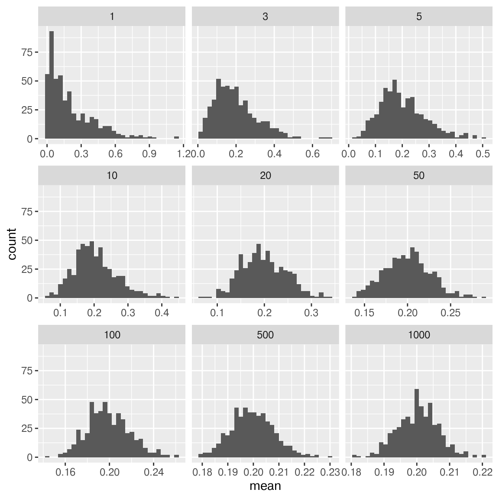
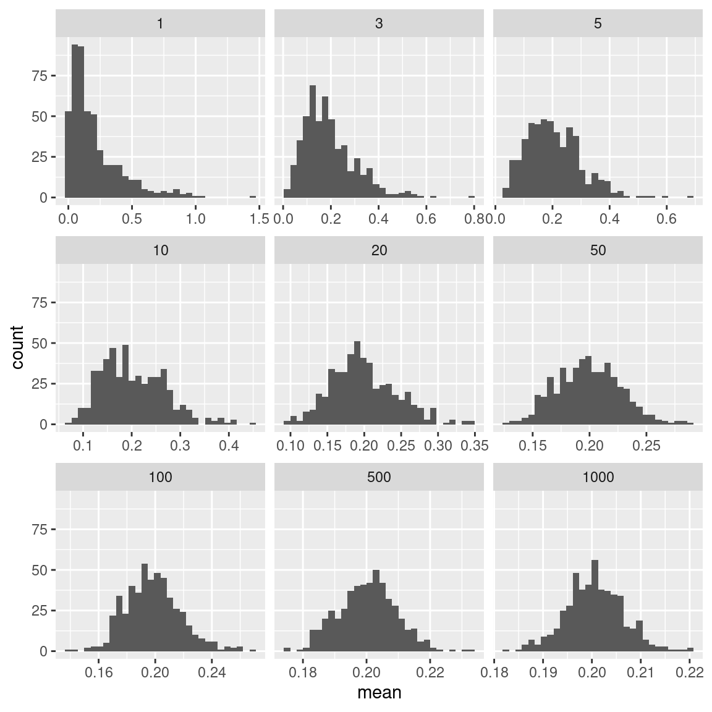

# A tibble: 3 × 2
x y
<int> <list>
1 1 <dbl [5]>
2 2 <dbl [15]>
3 3 <dbl [25]>Lists and Functional Programming
Purrr
dplyrhandles data framespurrrhandles lists
Remember: a data frame is a list
of vectors with equal length.

Lists can be used inside data frames with list-columns
List-Columns
A vector of single values is an atomic vector. But, not all vectors are atomic.
y is a list-column.
List-Columns
We can handle list-columns in multiple ways:
- Unnest into an atomic vector (
tidyr) - Work with the list column using
map_*and similar functions
Map Functions
The map_* family of functions
- Takes a list
- Applies a function to each element of the list
- Returns a list (
map) or a vector (map_xxx) of typexxx
map is like a type-safe, pipe-friendly apply function from base R
Demonstrating Map
I want to show the Central Limit Theorem using simulation, using the Exponential(5) distribution.
Distribution of the sample mean converges to a normal distribution if \(\mu\) exists and \(\sigma^2 <\infty\) as \(n\rightarrow\infty\)
Select values of \(n\): 1, 3, 5, 10, 20, 50, 100, 500, 1000
Decide how many times you want to draw a sample for each value of \(n\).
For \(i=1, ..., 500\), sample \(n\) from Exp(5)Set up a tibble with \(n\) as a column, with each \(n\) repeated 500 times.
For each row in the tibble, draw a sample.
For each sample, calculate \(\overline{x}\)
Plot the \(\overline{x}_i\) values
Demonstrating Map
I want to show the Central Limit Theorem using simulation.
Distribution of the sample mean converges to a normal distribution if \(\mu\) exists and \(\sigma^2 <\infty\) as \(n\rightarrow\infty\)
library(dplyr)
library(purrr)
sim_df <- tibble(n = rep(c(1, 3, 5, 10, 20, 50, 100, 500, 1000), each = 500)) |>
# Create a list-column with mutate + map*
mutate(sample = map(n, ~rexp(., rate=5))) |>
# Summarize a list-column with mutate + map*
mutate(mean = map_dbl(sample, mean),
sd = map_dbl(sample, sd))
head(sim_df)# A tibble: 6 × 4
n sample mean sd
<dbl> <list> <dbl> <dbl>
1 1 <dbl [1]> 0.0978 NA
2 1 <dbl [1]> 0.0754 NA
3 1 <dbl [1]> 0.0519 NA
4 1 <dbl [1]> 0.0762 NA
5 1 <dbl [1]> 0.459 NA
6 1 <dbl [1]> 0.265 NADemonstrating Map
I want to show the Central Limit Theorem using simulation.
Distribution of the sample mean converges to a normal distribution if \(\mu\) exists and \(\sigma^2 <\infty\) as \(n\rightarrow\infty\)
Demonstrating Nest/Unnest
I want to show the Central Limit Theorem using simulation, using the Exponential(5) distribution.
Distribution of the sample mean converges to a normal distribution if \(\mu\) exists and \(\sigma^2 <\infty\) as \(n\rightarrow\infty\)
Select values of \(n\): 1, 3, 5, 10, 20, 50, 100, 500, 1000
Decide how many times you want to draw a sample for each value of \(n\).
For \(i=1, ..., 500\), sample \(n\) from Exp(5)Set up a tibble with \(n\) as a column, with each \(n\) repeated 500 times. Define index \(i\) as another column.
For each row in the tibble, draw a sample. Unnest the samples.
For each sample, calculate \(\overline{x}_i\), grouping by \(i\)
Plot the \(\overline{x}_i\) values
Demonstrating Nest/Unnest
I want to show the Central Limit Theorem using simulation.
Distribution of the sample mean converges to a normal distribution if \(\mu\) exists and \(\sigma^2 <\infty\) as \(n\rightarrow\infty\)
library(dplyr)
library(purrr)
sim_df <- tibble(n = rep(c(1, 3, 5, 10, 20, 50, 100, 500, 1000), each = 500)) |>
# Create i column
group_by(n) |>
mutate(i = 1:n()) |>
ungroup() |>
# Create a list-column with mutate + map*
mutate(sample = map(n, ~rexp(., rate=5))) |>
unnest(sample)
res_df <- sim_df |>
group_by(n, i) |>
# Summarize a list-column with mutate + map*
summarize(mean = mean(sample)) |>
ungroup()
head(sim_df)# A tibble: 6 × 3
n i sample
<dbl> <int> <dbl>
1 1 1 0.180
2 1 2 0.104
3 1 3 0.568
4 1 4 0.623
5 1 5 0.562
6 1 6 0.137# A tibble: 6 × 3
n i mean
<dbl> <int> <dbl>
1 1 1 0.180
2 1 2 0.104
3 1 3 0.568
4 1 4 0.623
5 1 5 0.562
6 1 6 0.137Demonstrating Nest/Unnest
I want to show the Central Limit Theorem using simulation.
Distribution of the sample mean converges to a normal distribution if \(\mu\) exists and \(\sigma^2 <\infty\) as \(n\rightarrow\infty\)